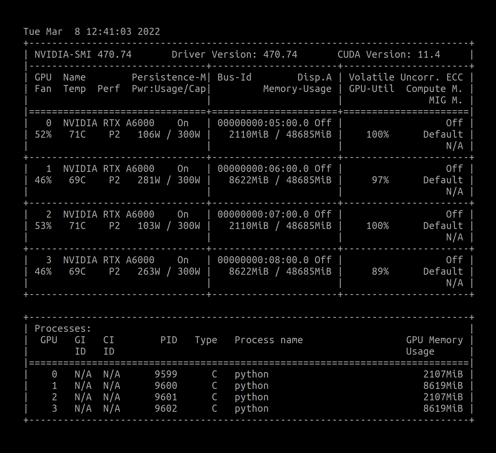
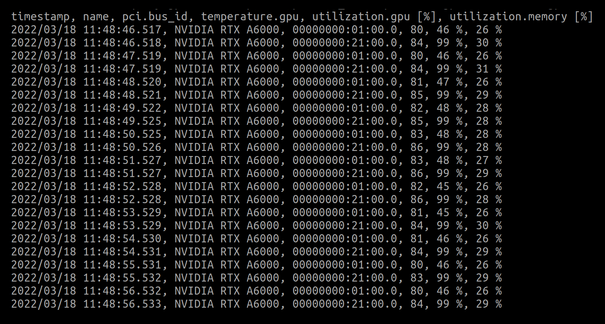
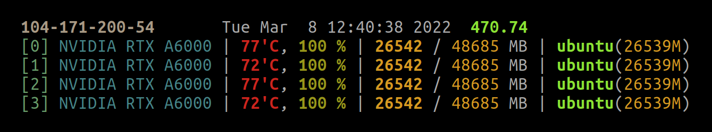
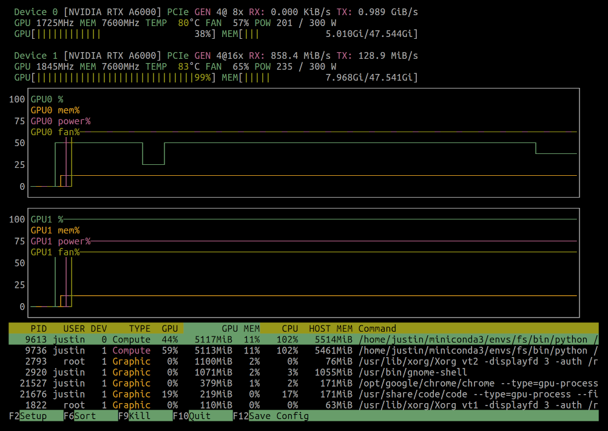
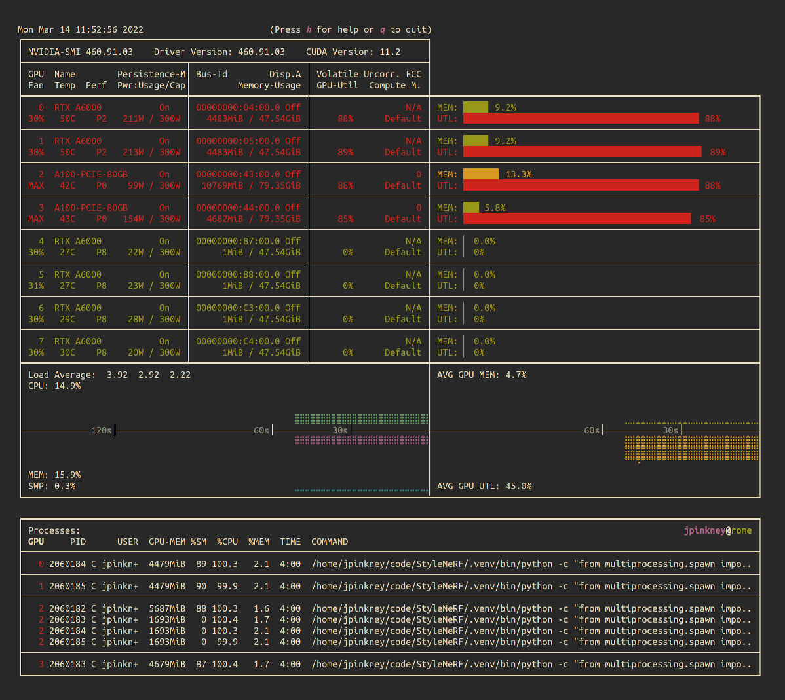
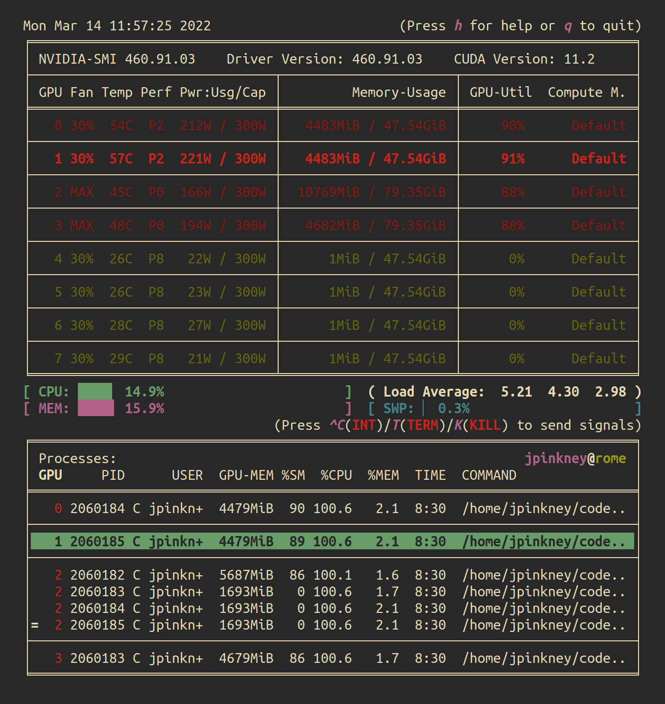
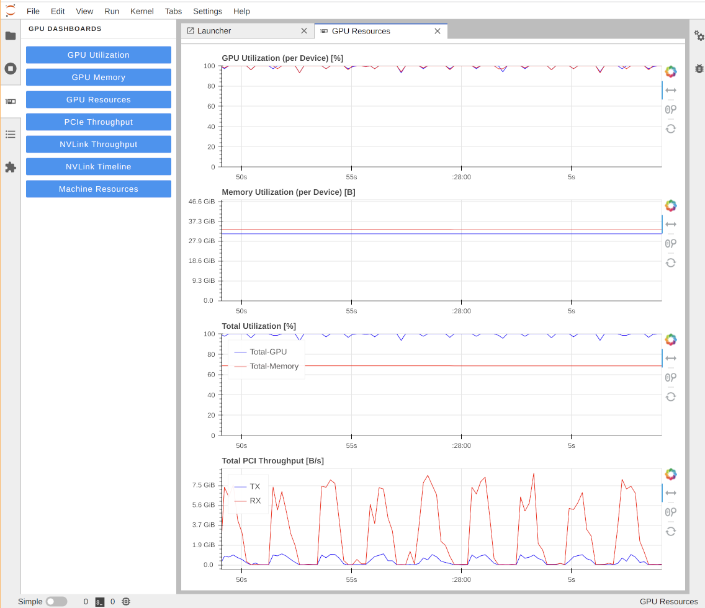
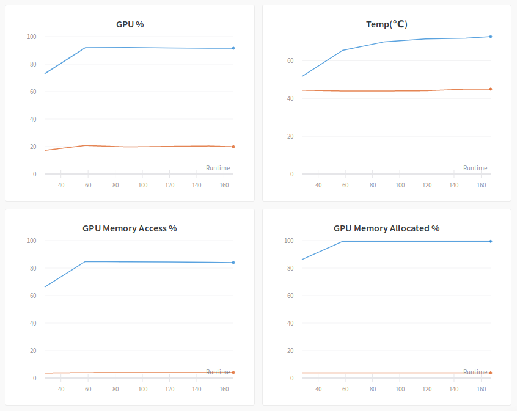
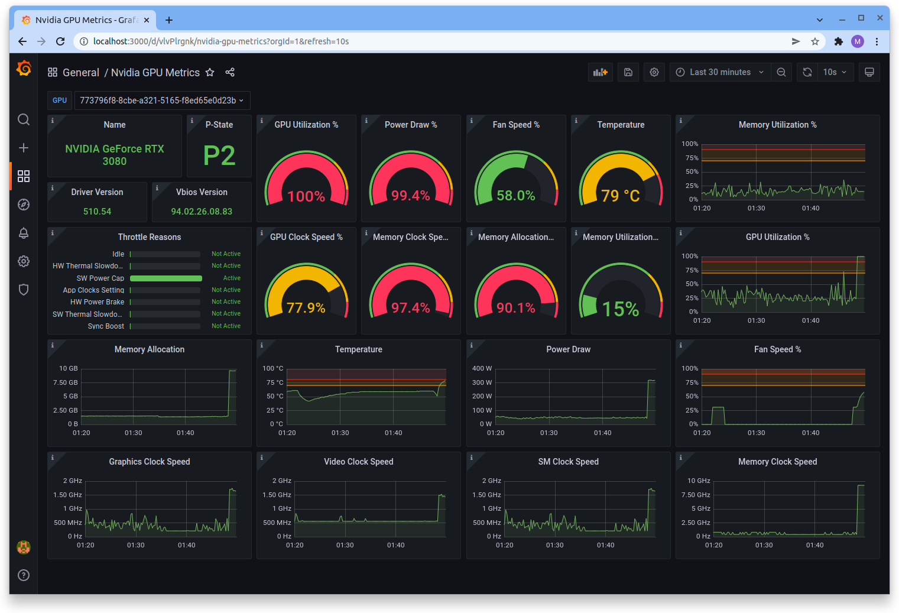

Monitoring
CPU & RAM
top
htop
GPU
nvidia-smi
watch -n 0.1 nvidia-smi: Watch every 0.1 seconds the output of nvidia-smi

nvidia-smi --query-gpu=timestamp,name,pci.bus_id,temperature.gpu,utilization.gpu,utilization.memory --format=csv -l 1

Others:
- nvidia-smi -q -d TEMPERATURE,PERFORMANCE: To see the slowdown/shutdown behavieour based on their temperature. If you frequently see HW Slowdown is activated, you probably need to improve the cooling of your machine.
- nvidia-smi topo -m: shows the “GPU topology“, which describes how GPUs are connected. The topology is important to understand if data transfers between GPUs are being made via direct memory access (DMA) or through host devices.
gpustat
a Python libary (pip install --user gpustat) to in a more concise, prettier, and simpler way (one line per GPU)

nvtop

nvitop


jupyterlab-nvdashboard
pip install --user jupyterlab_nvdashboard

Weights & Biases

Grafana

Reference
https://lambdalabs.com/blog/keeping-an-eye-on-your-gpus-2/